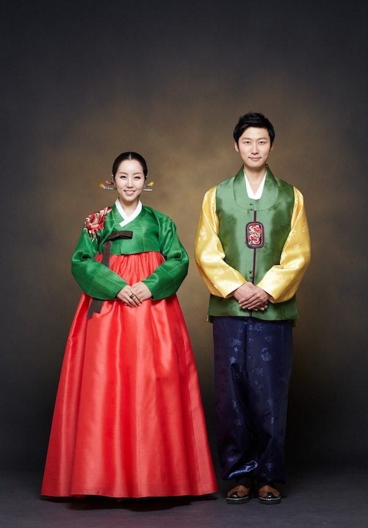
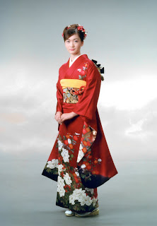
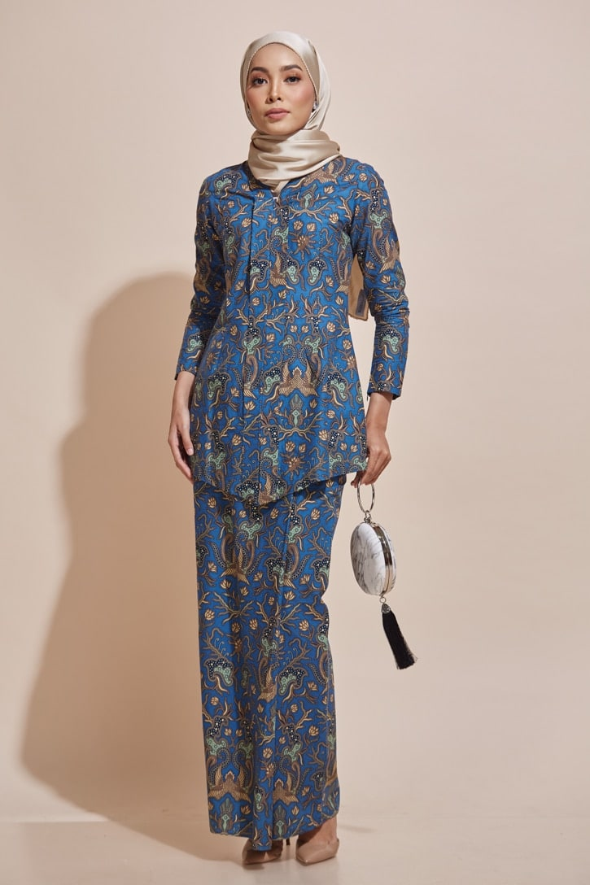
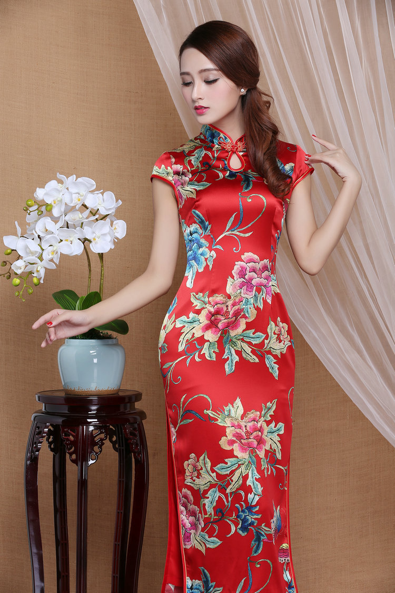

In the Bhutan mountain kingdom, the Bhutanese national dress dates back to over 400 years ago in the 17th century. Today, the gho and kira are worn throughout daily life, in professional and government positions, and on formal occasions. Men wear a gho, a long robe like garment tied at the waist with a cloth belt, and women wear a kira, which is wrapped and folded around the body, pinned at both shoulders with brooches and topped with a traditional blouse and jacket.

The South Korean hanbok is a traditional 2-piece costume that men and women wear to formal or semi-formal events such as festivals, celebrations, and ceremonies. The women’s hanbok is the jeogori (jacket) and the chima, a long high-waisted wrap skirt. The men’s hanbok also includes a jeogori and is paired with full-length loose-fitting baji (trousers).The Áo Dài, long dress, is the national costume of Vietnam and symbolizes elegance. The traditional women’s áo dài is a form-fitting long silk dress with long sleeves and a mandarin neckline. It is worn over long pants and paired with a conical hat (non la). Modern áo dài are made of more breathable fabrics and are worn every day, for work, and special occasions.

The Japanese kimono dates back around 794 to 1192 AD and is one of the oldest national attires worn today. Today women typically wear it for occasions such as weddings or funerals. There are 2 versions of the kimono: yukata, which is worn at home and made of thin fabrics like cotton, linen, or hemp, and the furisode, often in bright colors with long sleeves and sometimes passed down as a family heirloom gifted as a wedding present.

The kebaya is a traditional Indonesian and Malaysian blouse-dress combination. It consists of a blouse and loose-fitting pants which are often made from lace, semi-transparent nylon, or cotton with floral patterns, and paired with a brooch. The kebaya is also the national costume of Indonesia and worn in Singapore, Brunei, and the Philippines. Malaysia Airlines and Singapore Airlines stewardesses also wear kebaya-style uniforms.

The cheongsam is a high necked, form-fitting dress with a slit in the skirt. Typically, it is made from Chinese silk with printed floral or spiral designs. The cheongsam originates from the 1600s during Manchu rule in China during the Qing dynasty. Modern cheongsams are worn for festive occasions like Lunar New Year, family celebrations, beauty shows and pageants, and weddings as bridal gowns.